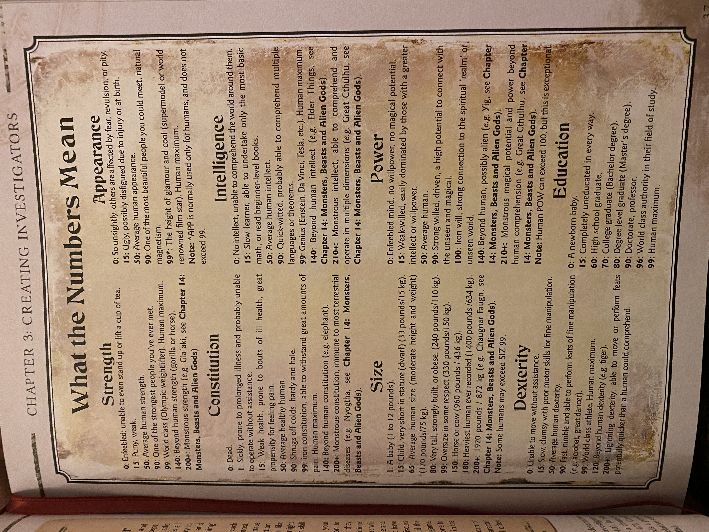
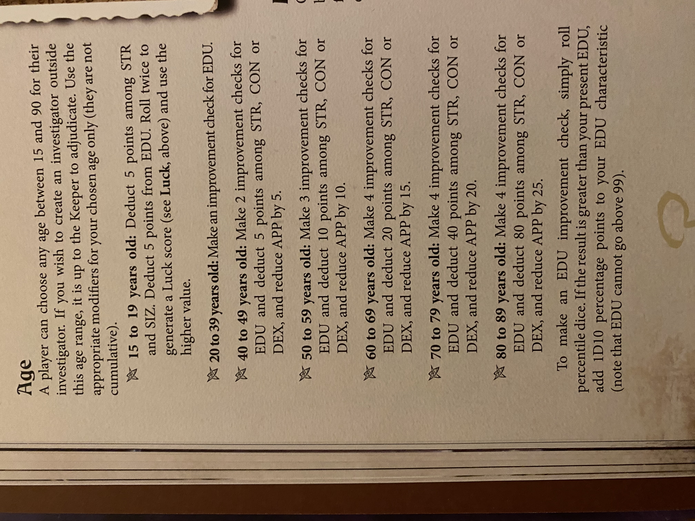
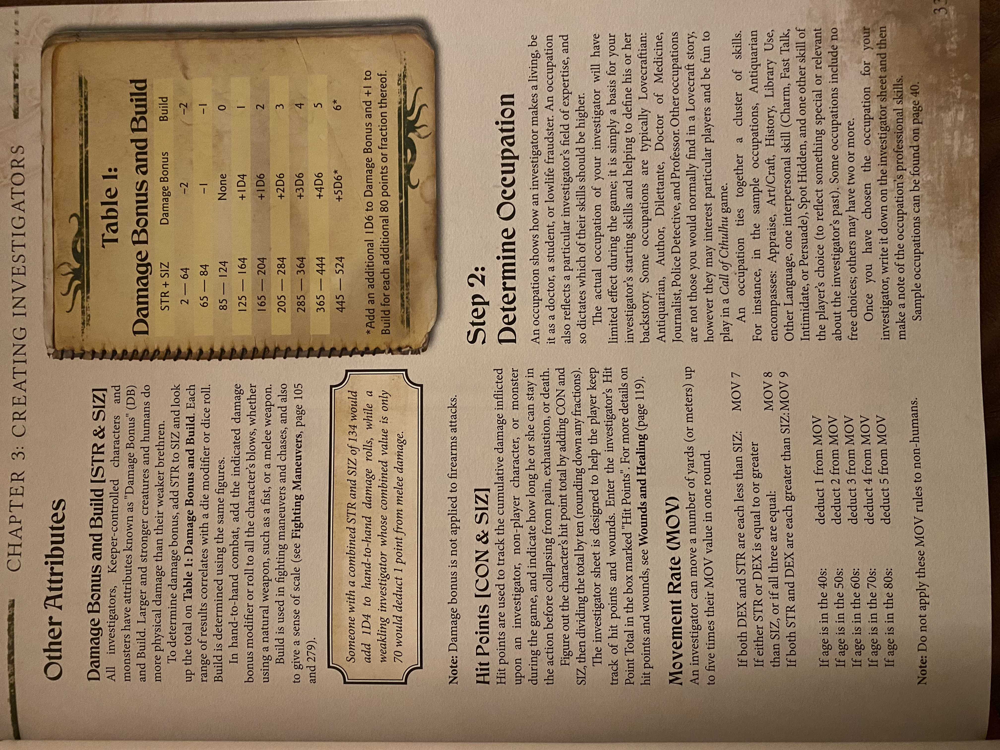
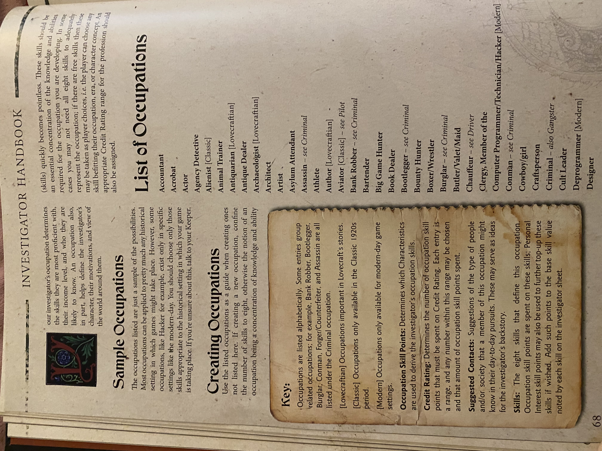
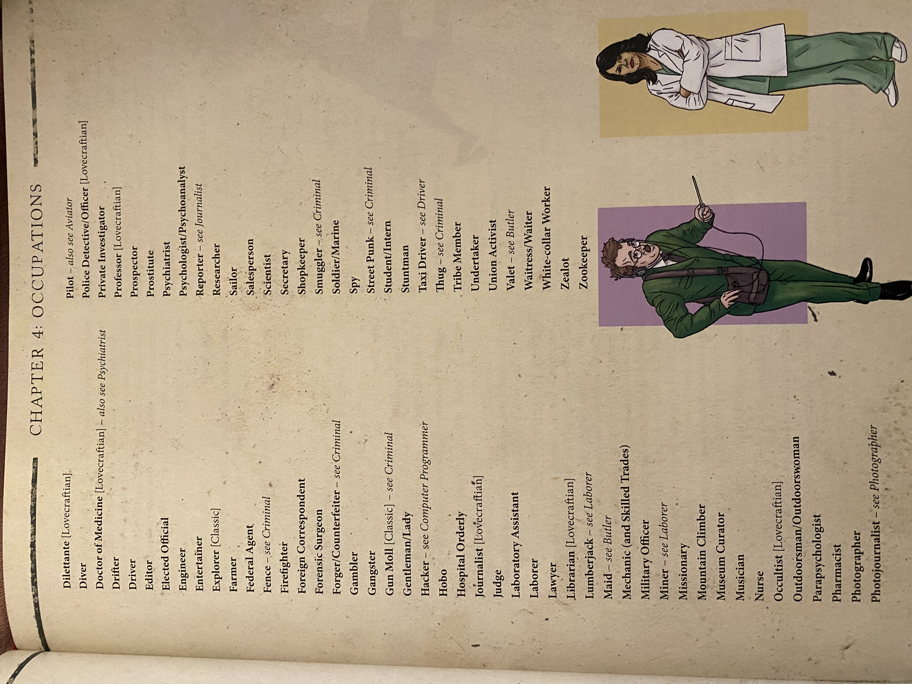

Character Creation
Rolling Stats
Now that you know a little bit about the Lovecraft Mythos and the premise of this campaign, let's make some characters! The first thing you need to understand are the stats for this campaign. Now that you know what they are, let's roll up some stats! This next part is going to involve some math, so if you're not used to TTRPGs, buckle in. You can do this. I believe in you.
 ,
,You will need:
- One six-sided die (or an online die roller).
- A calculator.
- Pen and paper.
Each stat ends up as a percentage out of 100.
There are 8 stats in total. Here is a brief summary of them.

Since each stat is rolled as a percentage, you can consult
the table below for examples of what your roll results may
look like for your character.

For the stats STR, CON, DEX, APP, POW and Luck
(which we will talk about later):
Roll the ordinary 6-sided die 3 times and add the result together. Then, multiply this value by 5. Now you have your % out of 100.
For the stats SIZ, INT, and EDU:
Roll the ordinary 6-sided die 2 times and add the result together. Add 6 to that number. Then, multiply this value by 5. Now you have your % out of 100.
Now would be a good time to mention that there is a pdf where you can fill out all this information for your character. It will be essential that you fill out this sheet so we can easily keep track of your character’s stats.
Are We Almost Done? This is hard 🫠
Yes, just a few more steps! (I'm sorry T_T)
Choose your investigator's age, then apply the age modifiers
before filling in your sheet.

If the directions above are confusing to you, which they probably are, you can use the link here to lead you to a video that explains this character creation process much better than I could. The relevant section in the video starts at 10:30 and ends at 13:36.
The video also explains the next few steps, which are determining movement rate, hit points, sanity, and magic points. You can also reference the textbook page below for more information on how to do these next steps.

Choosing an Occupation
Now that you have your stats, you can choose an occupation for your character. The occupation you choose will determine what skills your character has, so you should try to think about what occupations a person with your statistics might be drawn to.
You can pick an occupation from this really big list here:


We will do more with this in a future session, but for now, this is
a good time to start thinking about your character's backstory. Peruse the
of skills under your characteristics and begin to think of which ones might
be important to your character both due to their occupation but also also
their personal interests and backstories.